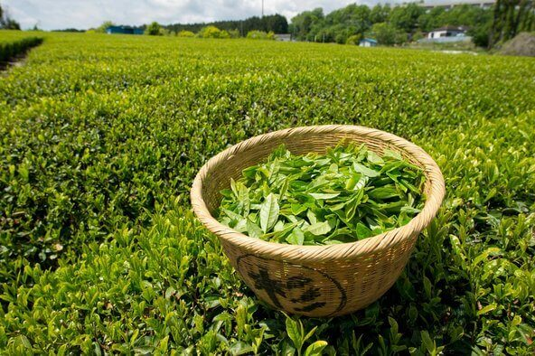
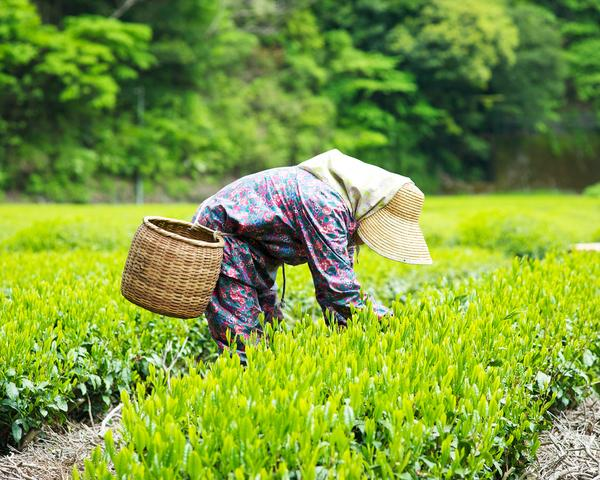
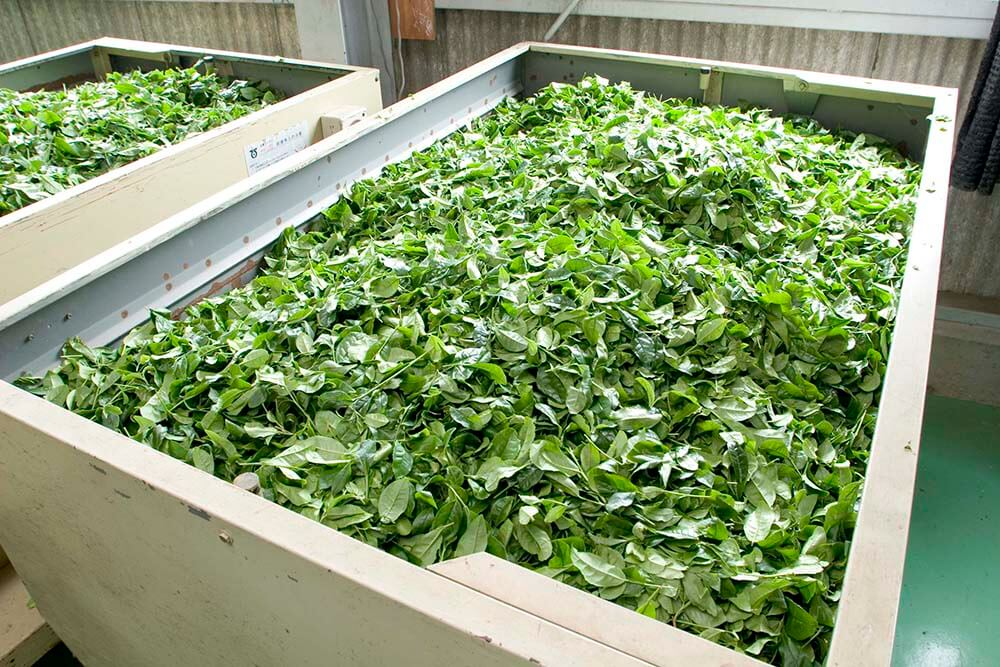
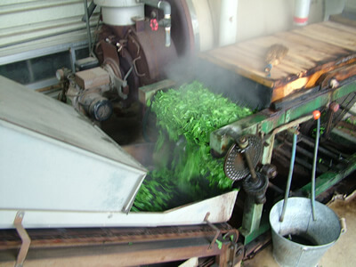

Process

Planting
The process for making Japanese green tea requires several steps. Each step is then given a little bit of room for customization, resulting in the different variety of teas that are available in Japan.
The first step is to plant the tea leaves. Even on step one, customization is possible. Most common, the plant is put in an environment with direct and prolonged exposure to the sun. The famous varietal of Sencha uses this method, which results in high levels of both Vitamin C and tannins. Another method, used for Gyokuro, does the opposite by growing in the shade.
Harvest
The harvest, or picking of the tea leaves, happens 1 to 5 times per year between Spring and Fall. The two methods for picking are by hand and by machine. The latter is more commonly used, but both have their time and place. The first harvest of the year is called the “First Flush”, which is considered to be of the highest quality.
Fanning
During this step, it is vital that the leaves keep their freshness by maintaining their moisture. As the leaves await the next step in the process, damp air is fanned over them to help retain quality and freshness.
Steaming
Steaming is an extremely important process that preserves the green color of the tea leaves and removes unwanted odors by stopping oxidation and fermentation. This step has the biggest effect on the final product’s flavor, aroma, and color.
Steaming is also what sets Japanese Green Teas apart from teas around the world. Most teas undergo this process of halting oxidation through a method known as pan frying. Steaming is unique to Japanese Green teas. This process is usually done for 20 to 120 seconds. A light steam will produce a clear and light tasting tea, while a long steam will make a full-bodied, dark product.
Rolling/Drying
This process contains many steps within itself, but the overall goal is the same. After steaming is finished, the goal is to abstract as much moisture from the leaves as possible. This is done by rolling the leaves in a machine or by hand while blowing hot, dry air on them. As the leaves roll, they naturally start to form into the long, needle shape for which they are known. This shape keeps the inner contents of the leaf safe, protecting the aroma and flavor. This process is what will preserve the leaves for long periods of time until they are ready for consumption.